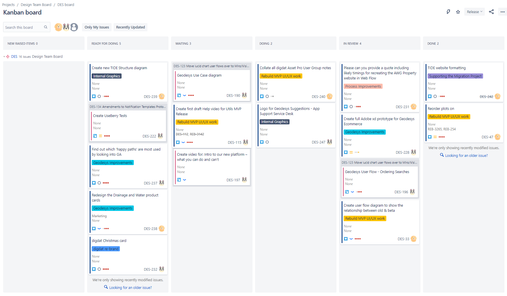
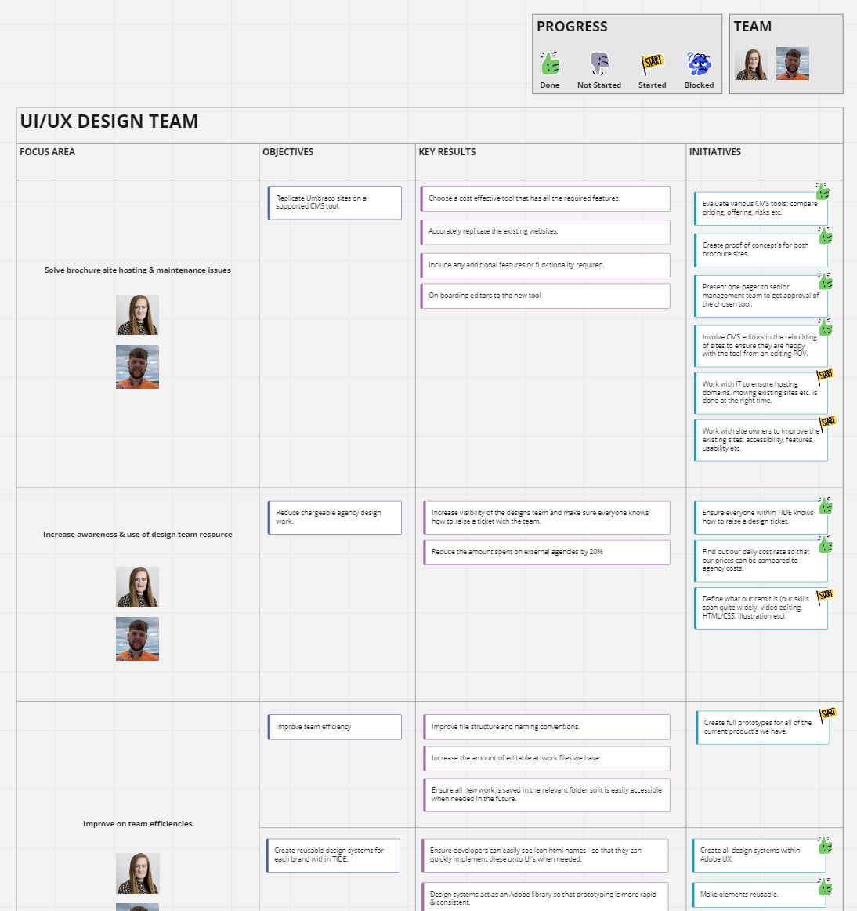

Objective - Build an internal UI/UX Team within TIDE, establish ways of working, by defining our UI and UX approach.
I felt it was very important for the team to create and polish our various brand design systems. We created them all in the same layout to ensure cross-brand consistencies, and by using XD we were able to set them up as libraries for us to utilise within our prototypes going forward.
We also included the developer tools within the adobe link, so that any software engineers could easily use the system to find out various style details such as; padding, margins, font weight, hex codes etc.


We set up team OKR's and review them every quarter.
We found the excercise to be a collaborative goal-setting method which we set up to ensure we are setting challenging, ambitious goals with measurable results. Our OKRs help us to track progress, create alignment, and encourage engagement around measurable goals.
Read more about OKR's